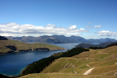

Nouvelle Zélande - 8/12/2010 au 16/05/2012
Près de 18 mois de séjour dans ce pays aux paysages somptueux nous ont permis d'apprécier la gentillesse de ses habitants.
La superficie du pays est semblable à celle de l'Italie mais le nombre d'habitants est seulement de 4 millions. Bref, y a de l'espace.
Jamais un pays ne nous aura autant émerveillés. Des geysers fumants de l'île du Nord aux fjords mystérieux de l'île du Sud, tout est magnifique.
On garde: Les paysages aussi divers que majestueux.
On scratche: Le climat, un rien trop tempéré pour être parfait.
On conseille: Bien préparer votre séjour si vous comptez rester plus de 3 mois (notamment pour les visas).

